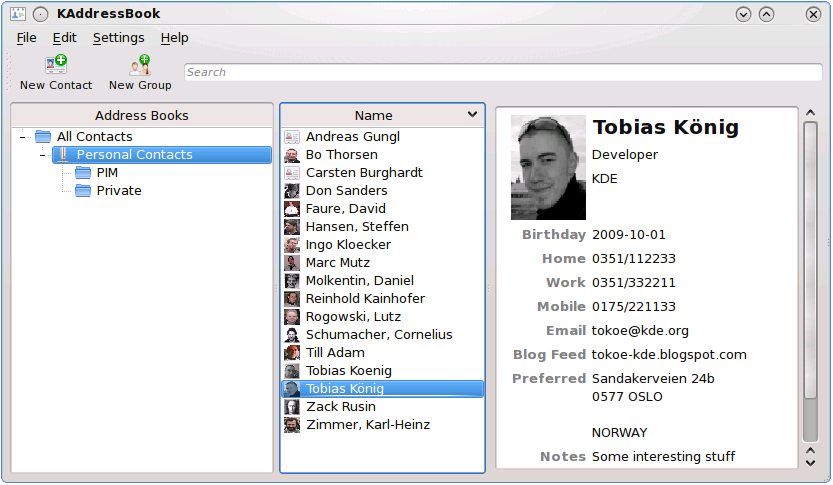
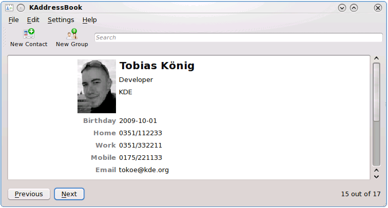
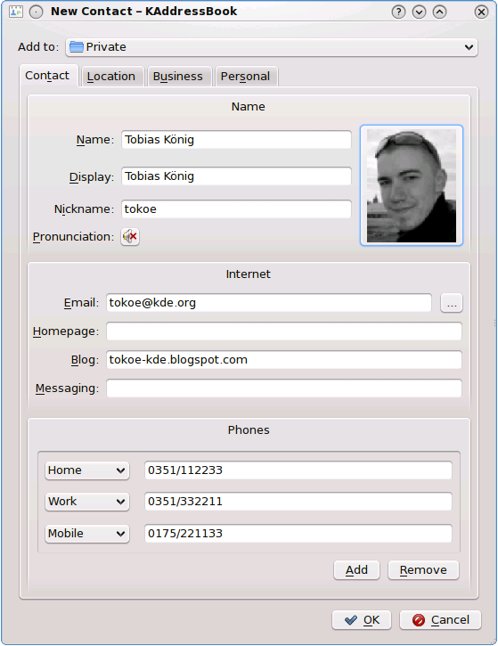
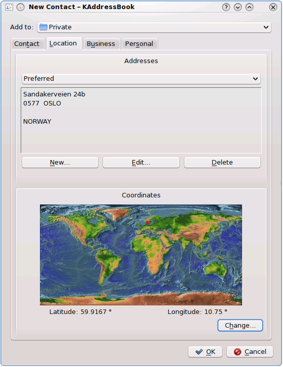
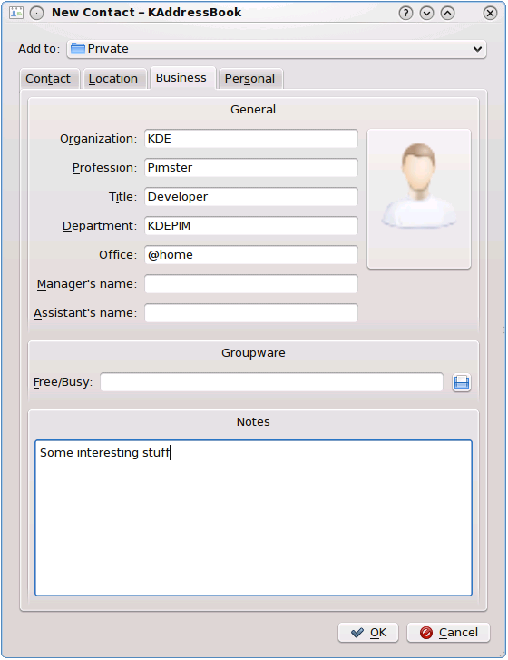
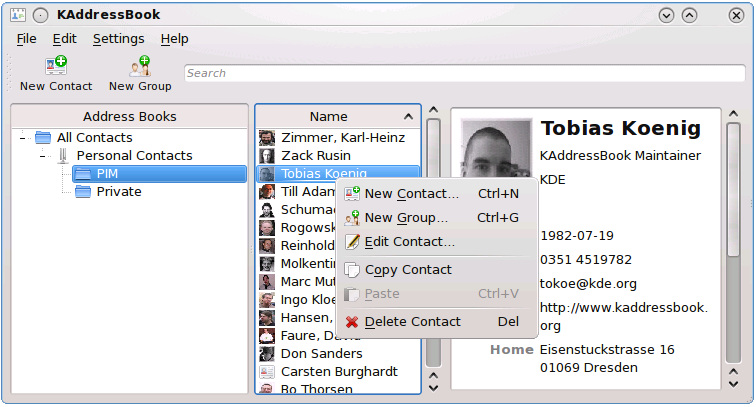
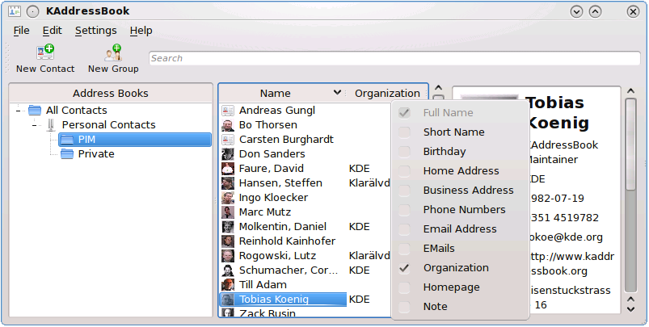

When you start the application you'll see a window like that one:

On the left side you have the list of available address books, by default an address book 'Personal Contacts' will exists that contains all your contacts from your old KAddressBook installation (better said the ones from $HOME/.kde/share/apps/kabc/std.vcf). In the middle you see the list of all contacts that exists in the currently selected address book and its sub folders. On the right side the detailed information about the currently selected contact is shown. With the port to Akonadi, not only contacts are listed in the middle view, but also contact groups (TCGFKADL 'TheContactGroupsFormallyKnownAsDistributionLists'), so they are first class citizens now and integrate much better than in KDE 3.5.
The toolbar has been cleaned up and the user interface is as simple as possible. If the 3-pane look is still too complex for you, you can switch to the 'Simple UI Mode', than KAddressBook will look like the following:

Simple UI Mode
Here you can quick search for a contact or contact group via the search line or iterate over the contacts with the 'Previous' and 'Next' buttons. This view should be enough for everybody who just wants to look up contacts quickly and seldom changes their data.
If you really want to add a new contact or change an existing one, you'll be using the new contact editor component, which is like already said available for every other application as well, so no strange dbus calls or exec('kaddressbook --new-contact') statements anymore.

In the 'Contact' tab you can enter the basic information of a person that you need to contact.

The 'Location' tab contains the addresses and coordinates of a person.

The 'Business' tab contains information that are useful for business contacts.

The 'Personal' tab contains personal information about a person.
In the future the editor will be extendable by plugins, so other applications can put there custom tabs there as well.
Let's go back to the address book and contacts view:

A right click on the address book view opens a menu where you can add, remove and modify the single address books (which in fact are Akonadi resources) and the address book folders. Yes, you can create folders and subfolders in your address book now to organize your contacts and in a later version we will also have virtual folders that allows you to group contacts by an arbitraty search query. A right click on the contacts view opens a similar menu where you can add, remove and modify contacts and contact groups.

If you right click on the header of the contacts view, a menu will appear where you can choose which columns shall be shown.

So these are the visual changes in KAddressBook, but under the hood there has been many changes as well. By default the contacts are stored now in a directory, each contact and contact group in its own file, so editing one contact will change only this file. The directory is located under $HOME/.local/share/contacts, so we can migrate later without having to care about $HOME/.kde3 vs. $HOME/.kde4 issues. Akonadi brings further features for free, for example offline mode with groupware servers, so you can do your changes offline and when you go online later on, the changes are transferred to the groupware server.